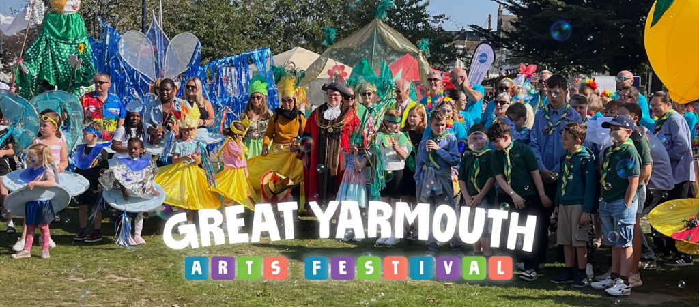
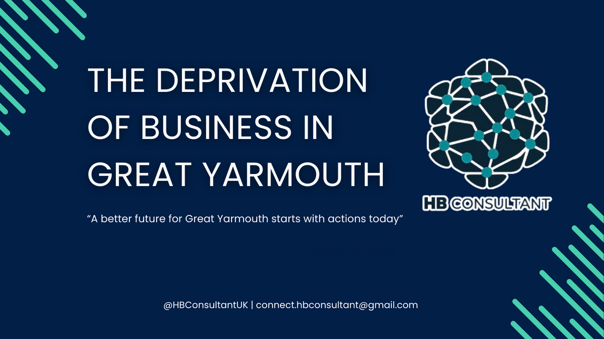

Selected work.
A selection of projects presented as they are — challenge, role, approach and work completed. Where an outcome isn't measured, the case study says so rather than inventing a number.
Case studies
Two projects, honestly presented

Great Yarmouth Arts Festival
Brand identity & marketing expansion
Brand identity and marketing expansion opportunities for the Great Yarmouth Arts Festival.
Read the case study
Bradford Independent
The Deprivation of Business in Great Yarmouth
An independent research report examining business deprivation in Great Yarmouth, produced under the HB Consultant name — now Bradford Independent.
Read the case study
More work available on request. Not every project can be published —
but I'm happy to talk through relevant examples in a conversation. Ask about the kind
of work you're considering and I'll describe comparable projects honestly.
Your project could be next
Tell me what's happening, what you're trying to achieve, and where you're getting stuck.
Or go straight to the source
- harley@bradfordindependent.com
- I'll get back to you within a day.